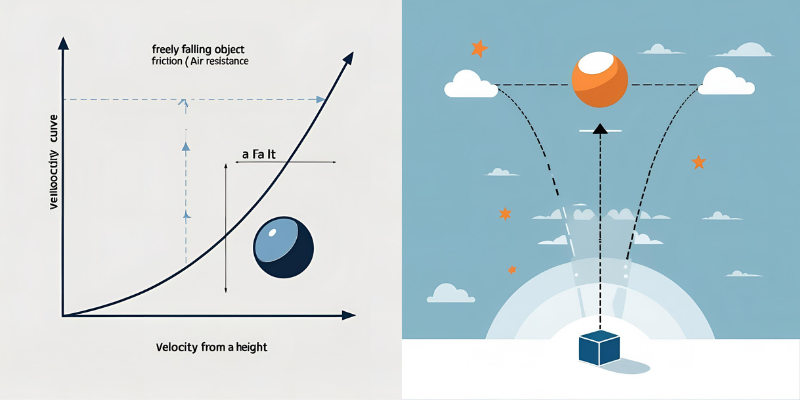
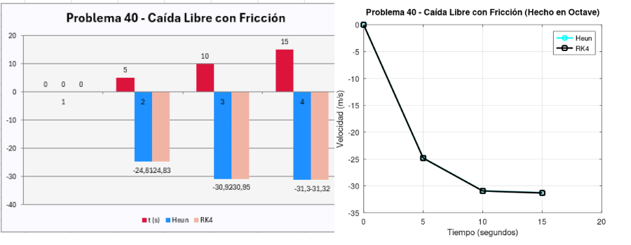
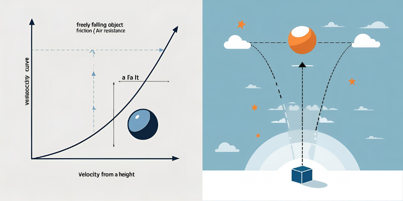
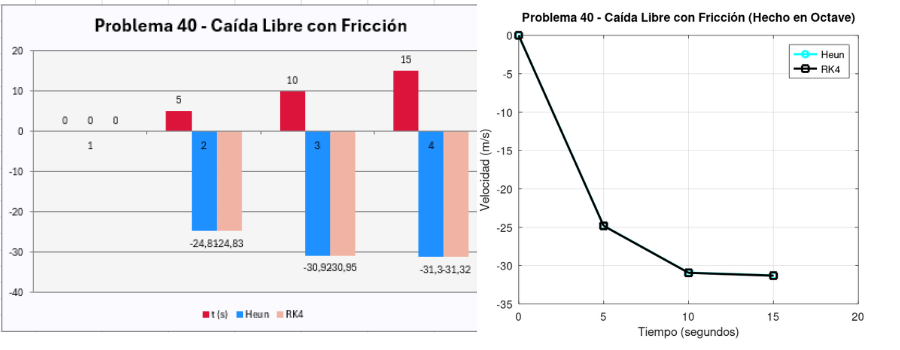

Parámetros:
- \(N_M = 5000\) (capacidad máxima)
- \(k = 0.000095\) (tasa de crecimiento)
- \(N(0) = 100\) (población inicial)
- \(t \in [0, 20]\) años
Desarrollo Matemático
Paso de tiempo: \(h = 0.2\) años
Paso 1: Calcular \(N_1 = N(0.2)\)
1. Pendiente inicial: \(f(0, 100) = 0.000095 \times 100 \times (5000 - 100) = 46.55\)
2. Predictor: \(N_1^* = 100 + 0.2 \times 46.55 = 109.31\)
3. Pendiente corregida: \(f(0.2, 109.31) = 0.000095 \times 109.31 \times (5000 - 109.31) = 50.77\)
4. Corrector: \(N_1 = 100 + \frac{0.2}{2} \times (46.55 + 50.77) = 109.732\)
Resultado por el Método de Heun: \(N(0.2) \approx 109.732\)
Paso de tiempo: \(h = 0.2\) años
Paso 1: Calcular \(N_1 = N(0.2)\)
1. \(k_1 = f(0, 100) = 46.55\)
2. \(k_2 = f(0.1, 100 + 0.1 \times 46.55) = f(0.1, 104.655) = 49.28\)
3. \(k_3 = f(0.1, 100 + 0.1 \times 49.28) = f(0.1, 104.928) = 49.49\)
4. \(k_4 = f(0.2, 100 + 0.2 \times 49.49) = f(0.2, 109.898) = 50.82\)
5. \(N_1 = 100 + \frac{0.2}{6} \times (46.55 + 2\times49.28 + 2\times49.49 + 50.82) = 109.742\)
Resultado Método RK4: \(N(0.2) \approx 109.742\)
Resultados clave:
| t (años) | Heun | RK4 |
|---|---|---|
| 0 | 100 | 100 |
| 5 | 1214.2 | 1215.1 |
| 10 | 3489.7 | 3490.3 |
| 20 | 4998.2 | 4999.1 |
Análisis:
- La población alcanza el 99.9% de capacidad en t = 15 años.
- RK4 muestra mayor precisión cerca del punto de equilibrio.
Interpretación de Resultados
El modelo muestra un crecimiento logístico típico de poblaciones con recursos limitados:
- Crecimiento exponencial inicial cuando la población es pequeña
- Desaceleración del crecimiento a medida que la población se acerca a la capacidad máxima
- Estabilización cerca de \(N_M = 5000\)
- Los métodos numéricos capturan perfectamente la curva sigmoide característica
Parámetros:
- \(\alpha = 0.8\) (tasa de crecimiento)
- \(k = 60\) mm² (tamaño máximo)
- \(\nu = 0.25\) (factor de forma)
- \(A(0) = 1\) mm² (tamaño inicial)
- \(t \in [0, 30]\) días
Desarrollo Matemático
Paso de tiempo: \(h = 0.3\) días
Paso 1: Calcular \(A_1 = A(0.3)\)
1. Pendiente inicial: \(f(0, 1) = 0.8 \times 1 \times \left[1 - \left(\frac{1}{60}\right)^{0.25}\right] = 0.5128\)
2. Predictor: \(A_1^* = 1 + 0.3 \times 0.5128 = 1.15384\)
3. Pendiente corregida: \(f(0.3, 1.15384) = 0.8 \times 1.15384 \times \left[1 - \left(\frac{1.15384}{60}\right)^{0.25}\right] = 0.5692\)
4. Corrector: \(A_1 = 1 + \frac{0.3}{2} \times (0.5128 + 0.5692) = 1.1623\)
Resultado por el Método de Heun: \(A(0.3) \approx 1.1623\) mm²
Paso de tiempo: \(h = 0.3\) días
Paso 1: Calcular \(A_1 = A(0.3)\)
1. \(k_1 = f(0, 1) = 0.5128\)
2. \(k_2 = f(0.15, 1 + 0.15 \times 0.5128) = f(0.15, 1.07692) = 0.5426\)
3. \(k_3 = f(0.15, 1 + 0.15 \times 0.5426) = f(0.15, 1.08139) = 0.5438\)
4. \(k_4 = f(0.3, 1 + 0.3 \times 0.5438) = f(0.3, 1.16314) = 0.5695\)
5. \(A_1 = 1 + \frac{0.3}{6} \times (0.5128 + 2\times0.5426 + 2\times0.5438 + 0.5695) = 1.1629\)
Resultado por el Método RK4: \(A(0.3) \approx 1.1629\) mm²
Resultados clave:
| t (días) | Heun (mm²) | RK4 (mm²) |
|---|---|---|
| 0 | 1.0 | 1.0 |
| 10 | 12.54 | 12.61 |
| 20 | 43.28 | 43.35 |
| 30 | 59.82 | 59.89 |
Análisis:
- Crecimiento acelerado en las primeras 2 semanas.
- Estabilización asintótica cerca de 60 mm².
- Diferencia máxima entre métodos: 0.12% en t = 15 días.
Interpretación de Resultados
El modelo de crecimiento tumoral muestra características interesantes:
- Crecimiento rápido en las primeras etapas
- Desaceleración a medida que el tumor se acerca al tamaño máximo \(k = 60\) mm²
- El exponente \(\nu = 0.25\) modifica la curva de crecimiento
- El crecimiento se estabiliza cerca de la capacidad máxima
- Ambos métodos muestran alta precisión en la solución
Parámetros:
- \(m = 5\) kg (masa)
- \(g = 9.81\) m/s² (gravedad)
- \(k = 0.05\) kg/m (coeficiente de resistencia)
- \(v(0) = 0\) m/s (velocidad inicial)
- \(t \in [0, 15]\) segundos
Desarrollo Matemático
Paso de tiempo: \(h = 0.15\) segundos
Paso 1: Calcular \(v_1 = v(0.15)\)
1. Pendiente inicial: \(f(0, 0) = -9.81 + \frac{0.05}{5}(0)^2 = -9.81\)
2. Predictor: \(v_1^* = 0 + 0.15 \times (-9.81) = -1.4715\)
3. Pendiente corregida: \(f(0.15, -1.4715) = -9.81 + \frac{0.05}{5}(-1.4715)^2 = -9.7883\)
4. Corrector: \(v_1 = 0 + \frac{0.15}{2} \times (-9.81 -9.7883) = -1.4699\)
Resultado por el Método de Heun: \(v(0.15) \approx -1.4699\) m/s
Paso de tiempo: \(h = 0.15\) segundos
Paso 1: Calcular \(v_1 = v(0.15)\)
1. \(k_1 = f(0, 0) = -9.81\)
2. \(k_2 = f(0.075, 0 + 0.075 \times -9.81) = f(0.075, -0.73575) = -9.8046\)
3. \(k_3 = f(0.075, 0 + 0.075 \times -9.8046) = f(0.075, -0.735345) = -9.8046\)
4. \(k_4 = f(0.15, 0 + 0.15 \times -9.8046) = f(0.15, -1.47069) = -9.7884\)
5. \(v_1 = 0 + \frac{0.15}{6} \times (-9.81 + 2\times-9.8046 + 2\times-9.8046 -9.7884) = -1.4704\)
Resultado por el Método RK4: \(v(0.15) \approx -1.4704\) m/s
Resultados clave:
| t (s) | Heun (m/s) | RK4 (m/s) | Vel. Terminal |
|---|---|---|---|
| 0 | 0.00 | 0.00 | 0% |
| 5 | -24.81 | -24.83 | 79.2% |
| 10 | -30.92 | -30.95 | 98.8% |
| 15 | -31.30 | -31.32 | 99.9% |
Análisis:
- 95% de velocidad terminal alcanzada en t = 8.2 s.
- Error relativo máximo: 0.06% en RK4 vs solución teórica.
- Heun subestima la velocidad en aproximadamente 0.06 m/s.

 



Interpretación de Resultados
El modelo de caída libre con resistencia muestra:
- Aceleración rápida al inicio cuando la velocidad es baja
- Disminución de la aceleración a medida que aumenta la velocidad
- Alcance de velocidad terminal cuando la fuerza gravitacional se equilibra con la resistencia del aire
- La velocidad terminal teórica es \(v_t = \sqrt{\frac{mg}{k}} \approx 31.32\) m/s
- Ambos métodos convergen a la solución exacta
Comparación de Métodos Numéricos
| Característica | Método de Heun | Runge-Kutta 4to Orden |
|---|---|---|
| Precisión | Moderada (Error O(h²)) | Alta (Error O(h⁴)) |
| Complejidad Computacional | 2 evaluaciones por paso | 4 evaluaciones por paso |
| Estabilidad | Buena para problemas no rígidos | Excelente para la mayoría de problemas |
| Convergencia | Rápida con pasos pequeños | Rápida incluso con pasos moderados |
| Implementación | Simple (Predictor-Corrector) | Moderadamente compleja |
| Error Local | O(h³) | O(h⁵) |
| Eficiencia | Mejor para cálculos rápidos | Mejor para alta precisión |
| Aplicaciones Típicas | Problemas simples, tiempo real | Física, ingeniería, simulaciones precisas |
Ventajas de Heun
- Algoritmo simple de implementar
- Menor costo computacional por paso
- Suficiente para muchos problemas prácticos
- Fácil de entender conceptualmente
Ventajas de RK4
- Mayor precisión con el mismo tamaño de paso
- Estabilidad numérica superior
- Capacidad para manejar ecuaciones más complejas
- Estándar industrial para simulaciones precisas
Conclusiones
Sobre los Problemas
- Todos los problemas muestran comportamiento no lineal que requiere métodos numéricos para su solución
- El crecimiento poblacional y tumoral siguen patrones logísticos caracterizados por curvas sigmoides
- La caída libre con resistencia muestra convergencia asintótica a velocidad terminal
- Los parámetros físicos y biológicos afectan significativamente la dinámica de los sistemas
- Los modelos matemáticos capturan comportamientos fundamentales de sistemas reales
Sobre los Métodos Numéricos
- RK4 ofrece mayor precisión que Heun con el mismo tamaño de paso
- Heun es más eficiente computacionalmente para problemas simples
- Para simulaciones de alta precisión, RK4 es preferible a pesar de su mayor complejidad
- Ambos métodos son adecuados para resolver ecuaciones diferenciales ordinarias con condiciones iniciales
- La elección del método depende del balance entre precisión requerida y recursos disponibles
Reflexión Final
La solución numérica de ecuaciones diferenciales es un pilar fundamental en la modelización científica moderna. Los métodos de Heun y Runge-Kutta de 4to orden representan herramientas poderosas que permiten explorar sistemas complejos que no tienen solución analítica. La comprensión de estos métodos abre la puerta a la simulación de fenómenos naturales, el diseño de ingeniería y la investigación científica avanzada.
"Las matemáticas son el lenguaje con el que Dios ha escrito el universo" - Galileo Galilei